<!DOCTYPE html>

<html>
  <head>
    <meta charset="utf-8" />
    <meta name="viewport" content="width=device-width, initial-scale=1.0" /><meta name="generator" content="Docutils 0.17.1: http://docutils.sourceforge.net/" />

    <title>QUake-MD Interface’s documentation &#8212; QUake-MD Interface User Manual 1.0 documentation</title>
    <link rel="stylesheet" type="text/css" href="_static/pygments.css" />
    <link rel="stylesheet" type="text/css" href="_static/alabaster.css" />
    <script data-url_root="./" id="documentation_options" src="_static/documentation_options.js"></script>
    <script src="_static/jquery.js"></script>
    <script src="_static/underscore.js"></script>
    <script src="_static/doctools.js"></script>
    <link rel="index" title="Index" href="genindex.html" />
    <link rel="search" title="Search" href="search.html" />
    <link rel="prev" title="Installation" href="installation.html" />
   
  <link rel="stylesheet" href="_static/custom.css" type="text/css" />
  
  
  <meta name="viewport" content="width=device-width, initial-scale=0.9, maximum-scale=0.9" />

  </head><body>
  

    <div class="document">
      <div class="documentwrapper">
        <div class="bodywrapper">
          

          <div class="body" role="main">
            
  <section id="quake-md-interface-s-documentation">
<h1>QUake-MD Interface’s documentation<a class="headerlink" href="#quake-md-interface-s-documentation" title="Permalink to this headline">¶</a></h1>
<section id="launch-quake-md-interface">
<h2>Launch QUake-MD Interface<a class="headerlink" href="#launch-quake-md-interface" title="Permalink to this headline">¶</a></h2>
<p>To run QUake-MD GUI, open an ipython terminal/Konsole, move to the QUake-MD GUI repertory and enter:</p>
<div class="highlight-default notranslate"><div class="highlight"><pre><span></span><span class="n">run</span> <span class="n">Quake</span><span class="o">-</span><span class="n">MD</span><span class="o">/</span><span class="n">AppliInterface</span><span class="o">.</span><span class="n">py</span>
</pre></div>
</div>
<p>The following start window will open:</p>
<a class="reference internal image-reference" href="_images/accueil_QUakeMD.PNG">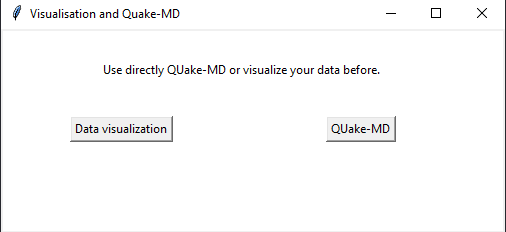</a>
<p>To access to the data visualization tool, click the <em>Data Visualization</em> button.
To access to the QUake-MD tool, click the <em>QUake-MD</em> button.</p>
<div class="admonition note">
<p class="admonition-title">Note</p>
<p>The QUake-MD window can open from the Data Visualization window.</p>
</div>
</section>
<section id="data-visualization">
<h2>Data Visualization<a class="headerlink" href="#data-visualization" title="Permalink to this headline">¶</a></h2>
<p>On the <em>Data Visualization</em> window, the user can select a macroseismic database,
and then select one event from this database by event ID or date of the earthquake occurrence.</p>
<p>Once the event selected, the software will draw a macroseismic map with the IDP and a plot of the
epicentral projection of the IDP. Additional information will be also projected on the window, like the
epicentral intensity (I0) quality and the epicenter localization quality.</p>
<p>One example of <em>Data Visualization</em> :</p>
<a class="reference internal image-reference" href="_images/fenetre_DataVisualization.PNG">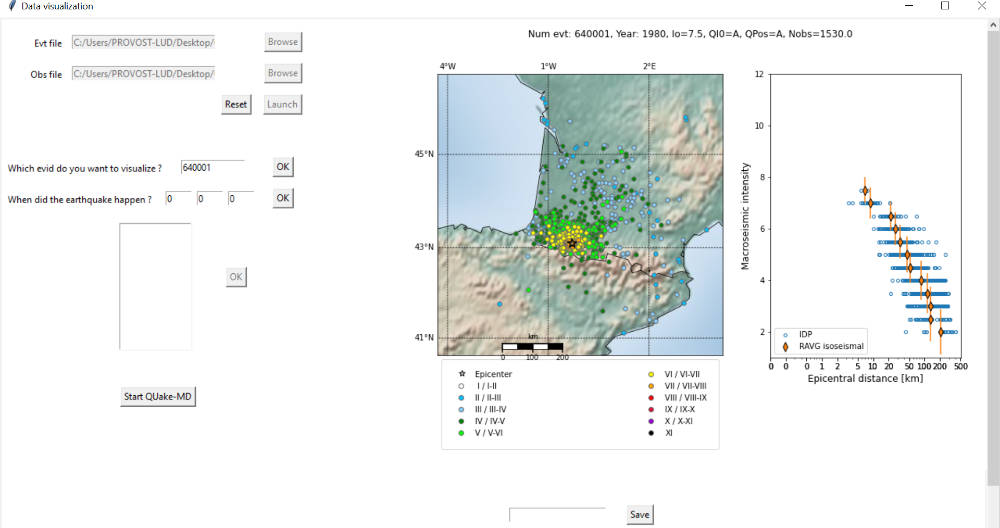</a>
<section id="input-data-format">
<h3>Input data format<a class="headerlink" href="#input-data-format" title="Permalink to this headline">¶</a></h3>
<p>Different data are needed to visualize the macroseismic data associated to an historical earthquake.
First data are the epicentral parameter, i.e. longitude and latitude of the epicenter, the epicentral
intensity, quality associated to epicentral localization and intensity. IDPs, i.e. intensity values
associated to a locality are also needed, meaning an intensity value, quality of this intensity value and
the longitude and latitude of the associated locality. An earthquake ID is also necessary to link all the
data.</p>
<p>These data have to be stored in two separate files: one Event file and one Observation file. These
two files and their format are described in the two following paragraphs.</p>
<section id="event-file">
<h4>Event file<a class="headerlink" href="#event-file" title="Permalink to this headline">¶</a></h4>
<p>The Event file contains data which describe the epicenter parameter of historical earthquakes, i.e. the epicenter localisation, time of earthquake occurrence and value of the intensity at the epicenter.
The first line contain the names of each column. Each following line corresponds to one earthquake.</p>
<dl class="simple">
<dt>The mandatory columns are:</dt><dd><ul class="simple">
<li><p>The ID of the event (name of the column: EVID),</p></li>
<li><p>The macroseismic epicentral intensity (name of the column: I0) ,.</p></li>
<li><p>The quality of the previous element, graded A (good quality), B (middle quality), C (poor quality) or E (very poor quality) (name of the column: QI0).</p></li>
<li><p>The longitude of the epicenter in WGS84 (name of the column: Lon)</p></li>
<li><p>The latitude of the epicenter in WGS84 (name of the column: Lat)</p></li>
<li><p>The quality of the position, graded A (very good location quality), B (good location quality), C (middle location quality), D (poor location quality), E (very poor location quality) or I (location very uncertain, set arbitrary based on one IDP) (name of the column: QPos)</p></li>
<li><p>The day of the earthquake (name of the column: Day)</p></li>
<li><p>The month of the earthquake (name of the column: Month)</p></li>
<li><p>The year of the earthquake (name of the column: Year)</p></li>
<li><p>A name, surrounded by quotation marks and used for legibility (name of the column: Name).</p></li>
</ul>
</dd>
</dl>
<p>Each column is separated by the ; sign. One example of input Event file can be found in the <strong>Example</strong> folder of
<strong>QUake-MD</strong> repository (Evt.example.txt).</p>
</section>
<section id="observation-file">
<h4>Observation file<a class="headerlink" href="#observation-file" title="Permalink to this headline">¶</a></h4>
<p>The Observation file contains all observations by localities associated to the earthquakes stored in the
Event file. The first line contain the names of each column. Each following line describes an observation at one locality so many lines can be
associated to one earthquake.</p>
<dl class="simple">
<dt>The mandatory columns are:</dt><dd><ul class="simple">
<li><p>The ID of the event (name of the column: EVID),</p></li>
<li><p>The value of intensity at this IDP. It’s equalled to -1 when the earthquake was felt but no value could be attributed (lack of information) (name of the column: IObs),</p></li>
<li><p>The quality of the intensity, graded A(good quality), B (middle quality) or C (poor quality) (name of the column: QIobs),</p></li>
<li><p>The longitude of the locality in WGS84 (name of the column: Lon),</p></li>
<li><p>The latitude of the locality in WGS84 (name of the column: Lat).</p></li>
</ul>
</dd>
</dl>
<p>Each column is separated by the ; sign. One example of input Event file can be found in the <strong>Example</strong> folder of
<strong>QUake-MD</strong> repository (Obs.example.txt).</p>
</section>
</section>
<section id="using-data-visualization-interface">
<h3>Using Data Visualization interface<a class="headerlink" href="#using-data-visualization-interface" title="Permalink to this headline">¶</a></h3>
<p>To use this interface, you have to select the Event and the Observation file names:</p>
<blockquote>
<div><a class="reference internal image-reference" href="_images/Browse_inputdatafiles.PNG">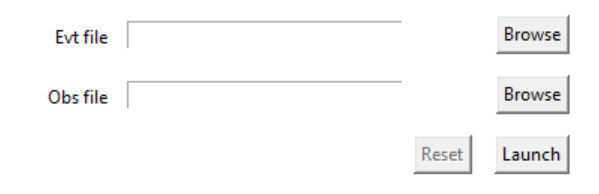</a>
</div></blockquote>
<p>To begin, you have to select the 2 files, entering the path in the text zone directly or by clicking on the Browse button and choosing the corresponding file.
Then, just click on the Launch button. If a problem is detected while the files are opened, an error window will appear.</p>
<p>Once files are launched, you can select your event.
You can directly typing its ID in the white field in front of the <em>Which event do you want to visualize?</em> sentence. Then click on the corresponding Ok button or press Enter.
You can also search it by date. You can enter a complete date or a couple month/year or just the year. For that, make sure other fields are completed with a 0.
Then, click on the Ok button or press Enter. A list with the corresponding earthquakes ID will appearbelow in the dedicated field. Click on the one you want to visualize, then click on the Ok
button in front of the earthquakes list or press Enter.</p>
<blockquote>
<div><a class="reference internal image-reference" href="_images/DV_selectEQ.PNG">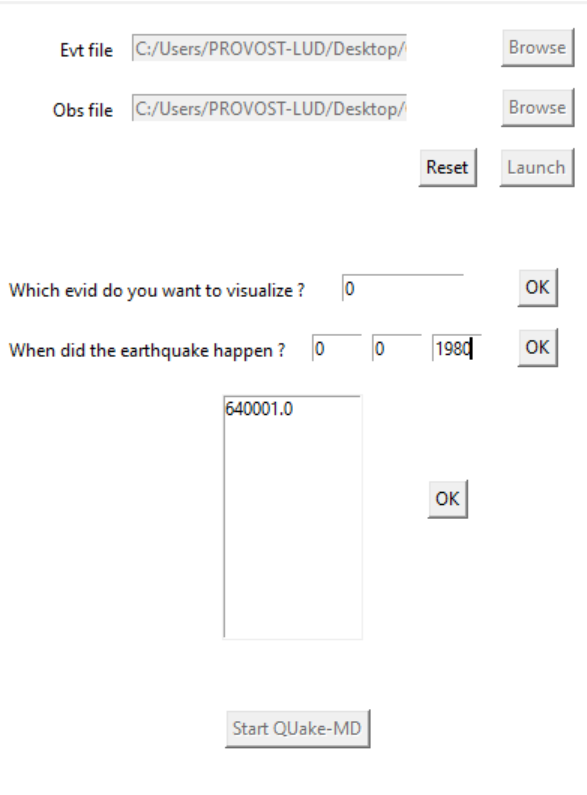</a>
</div></blockquote>
<p>Now, wait some seconds, calculus take a while. The map and the graph will appear on the window, or an error will occur and you will be adverted.</p>
<blockquote>
<div><a class="reference internal image-reference" href="_images/DV_map_figure.PNG">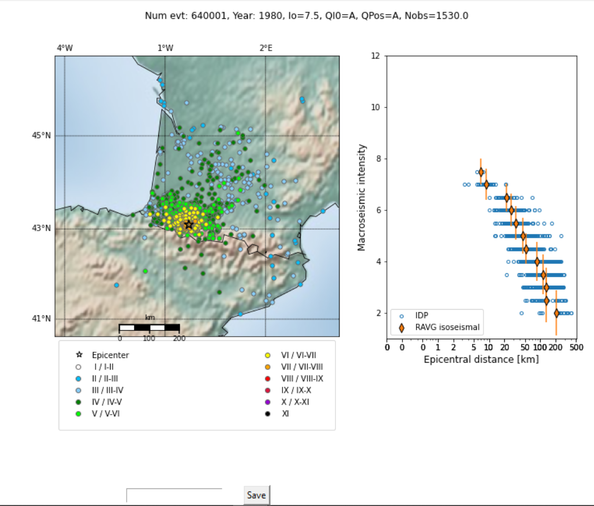</a>
</div></blockquote>
<p>The output is a figure with left the macroseismic map for the selected event. Each color corresponds in an intensity level. The legend of the macroseismic map is below the map. Right is an epicentral
projection of the IDP. The title of the figure indicates the event ID, the year of occurrence, the I0 value, the associated quality, the epicenter location quality, the number of IDP Nobs and the number
Nfelt of Felt testimonies (no intensity level could be attributed to the locality and the earthquake was felt).</p>
<p>You can save the figure with the <strong>Save</strong> button.
To launch the <strong>QUake-MD</strong> interface, you can click on the <strong>Start QUake-MD</strong> button.</p>
</section>
</section>
<section id="quake-md-interface">
<h2>QUake-MD interface<a class="headerlink" href="#quake-md-interface" title="Permalink to this headline">¶</a></h2>
<p><strong>QUake_MD</strong> interface can be launched from the start window or from the <strong>Data Visualization</strong> interface
window.</p>
<p>With the <strong>QUake-MD</strong> interface, the user selects the intensity data and Intensity Prediction Equations (IPEs) to compute probability density functions (PDF) in magnitude and hypocentral depth from intensity data with
the <strong>QUake-MD</strong> method.
The user can compute PDF for one or several earthquakes.</p>
<section id="id1">
<h3>Input data format<a class="headerlink" href="#id1" title="Permalink to this headline">¶</a></h3>
<p><strong>QUake_MD</strong> will need some inputs files. The intensity data needed are stored in two files: an Event file and an Observation file.
The Observation file has the same format as the input Observation file of <strong>Data Visualization</strong>. The Event file need some more field than the one in
<strong>Data Visualization</strong>. Finally, IPEs files are needed.</p>
<section id="id2">
<h4>Observation file<a class="headerlink" href="#id2" title="Permalink to this headline">¶</a></h4>
<p>See <strong>Data Visualization</strong> Observation input file.</p>
</section>
<section id="id3">
<h4>Event file<a class="headerlink" href="#id3" title="Permalink to this headline">¶</a></h4>
<p>See <strong>Data Visualization</strong> Event input file.</p>
</section>
<section id="ipe-file">
<h4>IPE file<a class="headerlink" href="#ipe-file" title="Permalink to this headline">¶</a></h4>
<p>The IPE files contain the IPEs which will be used in the inversion process of Quake-MD, with the following
mathematical formulation:</p>
<div class="highlight-default notranslate"><div class="highlight"><pre><span></span><span class="n">I</span> <span class="o">=</span> <span class="n">C1</span> <span class="o">+</span> <span class="n">C2</span> <span class="n">M</span> <span class="o">+</span> <span class="n">β</span> <span class="n">log10</span><span class="p">(</span><span class="n">Dhypo</span><span class="p">)</span> <span class="o">+</span> <span class="n">γ</span> <span class="n">Dhypo</span>
</pre></div>
</div>
<p>With C1 and C2 the magnitude coefficient, M the magnitude, β the geometrical attenuation coefficient,
log the decimal logarithm operator, Dhypo the hypocentral distance and γ the intrinsic attenuation
coefficient.</p>
<p>The IPEs files have the following format: one head line with information about the origin of the IPE
(useful just for the user, Quake-MD GUI will not use this line), one blank line, one line with the
column’s names, another blank line and 5 columns with the IPEs:</p>
<blockquote>
<div><ul class="simple">
<li><p>The first column is the weight of the IPE</p></li>
<li><p>The second column is the C1 coefficient</p></li>
<li><p>The third column is the C2 coefficient</p></li>
<li><p>The fourth column is the β coefficient</p></li>
<li><p>The fifth column is the γ coefficient</p></li>
</ul>
</div></blockquote>
<p>Each column is separated by tabulation. The sum of the weight column must be equal to one.</p>
</section>
</section>
<section id="using-quake-md-interface">
<h3>Using QUake-MD interface<a class="headerlink" href="#using-quake-md-interface" title="Permalink to this headline">¶</a></h3>
<section id="loading-the-intensity-data-files">
<h4>Loading the intensity data files<a class="headerlink" href="#loading-the-intensity-data-files" title="Permalink to this headline">¶</a></h4>
<p>To use this interface, you have to select the Event and the Observation file names:</p>
<blockquote>
<div><a class="reference internal image-reference" href="_images/Browse_inputdatafiles.PNG"></a>
</div></blockquote>
<p>To begin, you have to select the 2 files, entering the path in the text zone directly or by clicking on the Browse button and choosing the corresponding file.
Then, just click on the Launch button. If a problem is detected while the files are opened, an error window will appear.</p>
<p>If QUake_MD interface is launched from the Data Visualization interface window, the intensity files are already loaded.</p>
</section>
<section id="selecting-earthquakes-and-their-inversion-parameters">
<h4>Selecting earthquakes and their inversion parameters<a class="headerlink" href="#selecting-earthquakes-and-their-inversion-parameters" title="Permalink to this headline">¶</a></h4>
<p>Two options are available. <strong>QUake-MD</strong> can run one one earthquake or several earthquakes.
To run one earthquake, press the <em>One</em> button and enter the earthquake ID in the dedicated field.</p>
<blockquote>
<div><a class="reference internal image-reference" href="_images/QUakeMD_select_EQ.PNG"></a>
</div></blockquote>
<p>To run on several earthquakes, press the <em>All</em> button. <strong>QUake-MD</strong> compute then PDF for all earthquakes in the Event file.</p>
<p><strong>QUake-MD</strong> compute PDF in magnitude and depth from intensity data. Depth is inverted within an interval delemited by depth bounds. By default, the depth bounds
are equal to 1 km and 25 km. However the user can change those bounds using the dedicated fields on the interface. Only integers are allowed.
The intensity data smaller than the intensity of completeness are not taken into account for the PDF computation. By default, the intensity of completeness is equal to 3.
However the user can change the intensity of completeness using the dedicated field on the interface.</p>
</section>
<section id="selecting-the-output-directory">
<h4>Selecting the output directory<a class="headerlink" href="#selecting-the-output-directory" title="Permalink to this headline">¶</a></h4>
<p>An output folder has to be selected to store the results of QUake-MD.</p>
<blockquote>
<div><a class="reference internal image-reference" href="_images/QUake-MD_outputfolder.PNG"></a>
</div></blockquote>
</section>
<section id="selecting-the-intensity-prediction-equation">
<h4>Selecting the Intensity Prediction Equation<a class="headerlink" href="#selecting-the-intensity-prediction-equation" title="Permalink to this headline">¶</a></h4>
<p>The IPEs files has to be selected through the Browse button and associated to a rating.It is possible to add several IPE files with the Add button. in this case, the sum of the rating must
be 1. Otherwise, a warning message will appear when starting the QUake-MD computation.
For the moment, the sum of the probabilities of each IPE within the file is not tested by the QUake-MD algorithm. Please check it before running QUake-MD. If the sum of the IPE’s probabilities
within a IPE file is not equal to 1, the barycenter value in the output file will be not consistent with the direct median output of each IPE (output file <em>All_IPEs_classical_results.txt</em>, see
the dedicated chapter about the outputs).</p>
<blockquote>
<div><a class="reference internal image-reference" href="_images/QUakeMD_selectIPEs.PNG">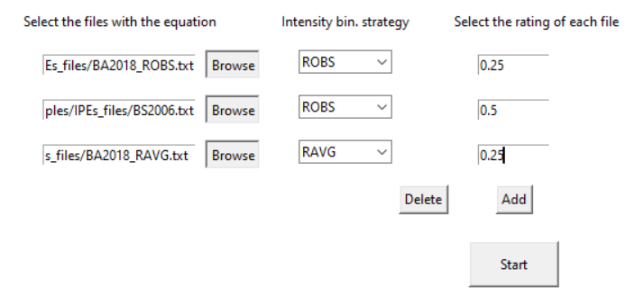</a>
</div></blockquote>
<p>A binning intensity method should be associated to the IPE file.The different binning intensity methods available are intensity class binning method called RAVG, ROBS, RP50, RP84, RF50 and RF84.
The width of the intensity class of RAVG is equal to 1 and use overlapping windows. For the other indicators, the width of the intensity class is equal to 0.25 (only one value of intensity wihtin an intensity class).
The value of intensity and epicentral distance of each isoseist computed with the RAVG method is equal to the weighted mean of the intensity data points (IDP) within the considered intensity class.
For the other methods, the value of intensity of each isoseist is equal to the intensity value of the considered intensity class.
For the ROBS method, the epicentral distance of each isoseist is equal to the epicentral distance weighted mean of the IDP within the considered intensity class.
For the RP50 method, the epicentral distance of each isoseist is equal to the epicentral distance weighted median of the IDP within the considered intensity class.
For the RP84 method, the epicentral distance of each isoseist is equal to the epicentral distance weighted 84th percentile of the IDP within the considered intensity class.
The RF50 and RF84 method are similar to the RP50 and RP84 methods but only the most reliable and farthest isoseist is kept. Epicentral intensity associated to an epicentral distance equal to 0 is the second isoseist for the RF methods.
The most reliable and farthest isoseist is chosen on the base of three criteria: the number of IDP within the intensity class, the epicentral distance of the isoseist and the weight of the IDP within the intensity class.
The square root of the number of IDP, the sum of the IDP weights and the epicentral distance associated to each isoseist are computed and the highest procduct of those three results gives the most reliable and farthest isoseist.</p>
</section>
<section id="run-quake-md">
<h4>Run Quake-MD<a class="headerlink" href="#run-quake-md" title="Permalink to this headline">¶</a></h4>
<blockquote>
<div><p>Once all previous steps completed, the <strong>QUake-MD</strong> algorithm can be launch with the <em>Start</em> Button (below the IPE selection area).</p>
</div></blockquote>
</section>
</section>
<section id="output-files-description">
<h3>Output files description<a class="headerlink" href="#output-files-description" title="Permalink to this headline">¶</a></h3>
<dl class="simple">
<dt>In the ouput folder, different type of output can be found:</dt><dd><ul class="simple">
<li><p>A log file,</p></li>
<li><p>A summary file with the output barycenters and percentiles of the magnitude/depth PDF associated to the input parameters,</p></li>
<li><p>An event output folder with figures of the PDF and the fit of the IPE prediction to the observed intensities and files with the PDF and the gaussian outputs of the magnitude and depth inversions.</p></li>
</ul>
</dd>
</dl>
<section id="the-log-file">
<h4>The log file<a class="headerlink" href="#the-log-file" title="Permalink to this headline">¶</a></h4>
<p>The log file which report each step of the calculation and the input parameters. The name of the log file is the time of the calculation start: <em>yearmonth-day_hour:minute:second.txt</em>.</p>
<blockquote>
<div><a class="reference internal image-reference" href="_images/outputfile_log.PNG">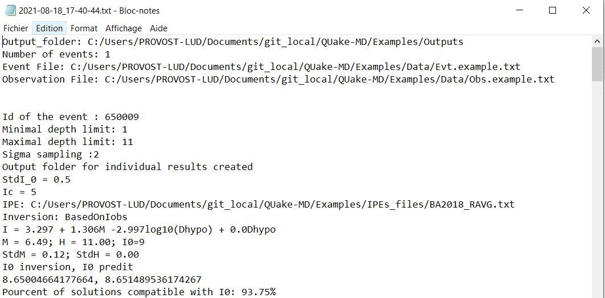</a>
</div></blockquote>
</section>
<section id="the-summary-file">
<h4>The summary file<a class="headerlink" href="#the-summary-file" title="Permalink to this headline">¶</a></h4>
<p>The other <em>.txt</em> file is the <em>file_temp_.txt</em> and contains a summary of the results, i.e. the event ID, the epicentral intensity of the input macroseismic catalogue,
its associated quality, the intensity of completeness used, the barycenter of the magnitude solutions estimated by Quake-MD and its
associated weighted 16th and 84th percentiles, the barycenter of the depth solutions estimated by <strong>QUake-MD</strong> and its associated weighted 16th and 84th percentiles and the barycenter of the epicentral
intensity solutions estimated by <strong>QUake-MD</strong> and its associated weighted 16th and 84th percentiles.</p>
<blockquote>
<div><a class="reference internal image-reference" href="_images/outputfile_temp.PNG">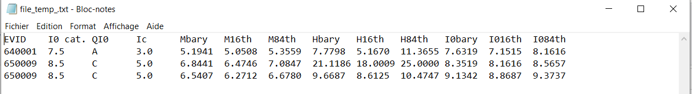</a>
</div></blockquote>
</section>
<section id="the-earthquake-output-folder">
<h4>The earthquake output folder<a class="headerlink" href="#the-earthquake-output-folder" title="Permalink to this headline">¶</a></h4>
<p>For each earthquake, an output folder is created. The name of the folder is the ID of the earthquake.
Different files can be found in this folder:</p>
<blockquote>
<div><ul class="simple">
<li><p>an IDP binning file, which contains the intensity bins computed for the inversion of magnitude and depth,</p></li>
<li><p>an All_IPEs_classical_results.txt file, with the output median and standard deviation defining the output gaussian solution for depth and magnitude,</p></li>
<li><p>PDF files, in depth/magnitude, depth/epicentral intensity and magnitude/epicentral intensity/depth for the final PDF and in depth/magnitude for each IPE file.</p></li>
</ul>
</div></blockquote>
<p><strong>Files</strong></p>
<dl class="simple">
<dt>The <em>IDP_binning_.txt</em> is a table separated by ‘,’ with 5 columns:</dt><dd><ul class="simple">
<li><p>EVID: ID of the earthquake,</p></li>
<li><p>Depi: Epicentral intensity of the isoseist,</p></li>
<li><p>I: intensity value of the isoseist,</p></li>
<li><p>StdI: Uncertainty associated to the intensity value,</p></li>
<li><p>StdLogR: Uncertainty associated to the epicentral distance,</p></li>
<li><p>Ndata: Number of IDP used to compute the isoseist.</p></li>
</ul>
</dd>
</dl>
<p>The name of the <em>IDP_binning_.txt</em> contains the name of the method used to compute the isoseists.</p>
<blockquote>
<div><a class="reference internal image-reference" href="_images/outputfile_Ibin.PNG">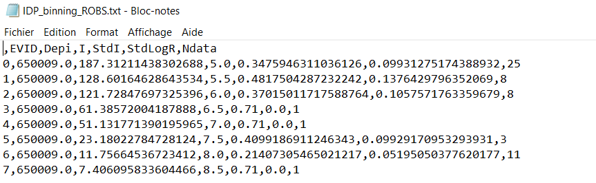</a>
</div></blockquote>
<dl class="simple">
<dt>The <em>All_IPEs_classical_results.txt</em> file is a table separated by ‘,’ with 11 columns:</dt><dd><ul class="simple">
<li><p>NumEvt: ID of the earthquake,</p></li>
<li><p>Bin_method: the intensity binning method used,</p></li>
<li><p>C1: C1 coefficient,</p></li>
<li><p>C2: C2 coefficient,</p></li>
<li><p>Beta: Beta coefficient,</p></li>
<li><p>Gamma: Gamma coefficient,</p></li>
<li><p>Mag: median magnitude  of the gaussian output from the least square inversion,</p></li>
<li><p>StdM: associated standard deviation of the gaussian output from the least square inversion,</p></li>
<li><p>H: median depth of the gaussian output from the least square inversion,</p></li>
<li><p>StdH: associated standard deviation of the gaussian output from the least square inversion,</p></li>
<li><p>Io: median epicentral intensity of the gaussian output from the least square inversion,</p></li>
</ul>
</dd>
</dl>
<p>This table contains the direct outputs of the inversion of magnitude and depth for each IPE used, i.e. the median and its associated standard deviation used to describe the output gaussian.</p>
<blockquote>
<div><a class="reference internal image-reference" href="_images/outputfile_classicalresults.PNG">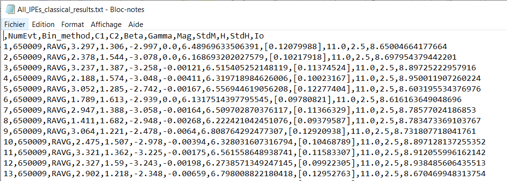</a>
</div></blockquote>
<p>The <em>HM.txt</em>, <em>HIo.txt</em> and <em>HMIo.txt</em> files contain the different computed PDF. The first line indicates the earthquake ID, the year of occurence and the epicentral intensity from the catalogue.
The three following lines indicates respectively the value of the PDF epicentral intensity barycenter, the value of the PDF magnitude barycenter and the value of the PDF depth (km) barycenter.
The fifth line is the column names of the following PDF. The last lines are the PDF. The content of the first two columns are indicated by the name of the fifth line. The last column is always
the value of probability associated to the previous columns.</p>
<blockquote>
<div><a class="reference internal image-reference" href="_images/outputfile_HM.PNG">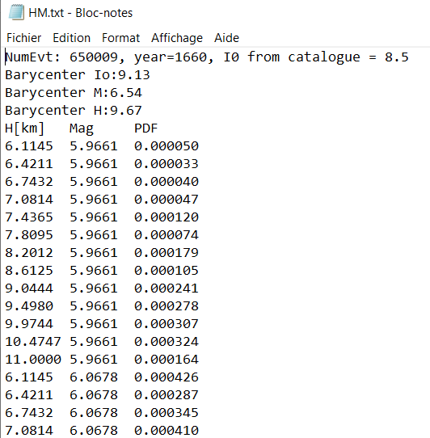</a>
</div></blockquote>
<p><strong>Figures</strong>
Four type of figures are saved.</p>
<p>The first one is an <em>fit_intensity</em> figure, which compare predicted intensity with observed intensity and display also the direct magnitude and depth outputs
for one IPE file. The upper figure represent the intensity prediction equations (IPEs, curves color‐coded by inverted depth) fit to the binned IDPs (diamonds). Gray points correspond to the IDP, the pink band corresponds to the I0
uncertainty range used to filter the space of M, H solutions, and the red dots correspond to the I0 value at the end of the inversion process for each IPE (for IPEs predicting I0
outside of the accepted boundaries, no red dots are shown).
The lower figure represents associated M, H central solutions of the inversions (dots color‐coded by inverted depth).</p>
<blockquote>
<div><a class="reference internal image-reference" href="_images/650009_fit_intensity_Law_0_RAVG.jpeg">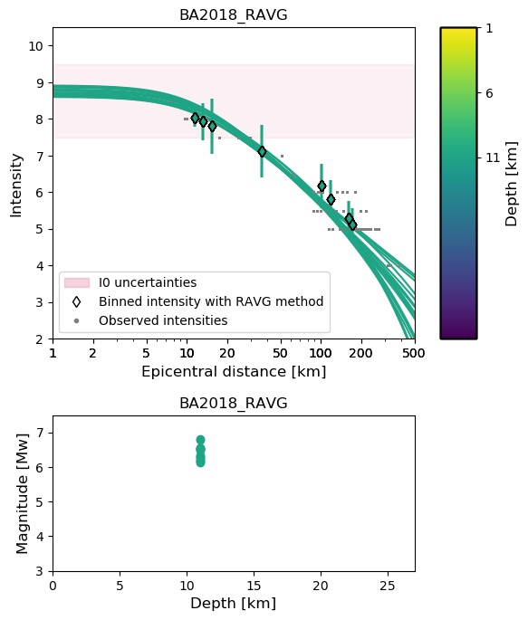</a>
</div></blockquote>
<p>The other figures are PDF figures. Only the final PDF is plotted in the output files. The first one is the magnitude/depth PDF:</p>
<blockquote>
<div><a class="reference internal image-reference" href="_images/HM.png">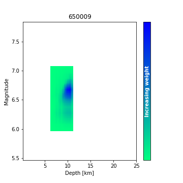</a>
</div></blockquote>
<p>The second one is the corresponding epicentral intensity/depth PDF:</p>
<blockquote>
<div><a class="reference internal image-reference" href="_images/HIo.png">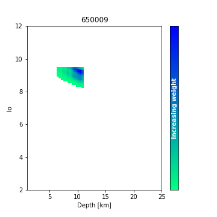</a>
</div></blockquote>
<p>And the third one is the magnitude/epicentral intensity/depth PDF:</p>
<blockquote>
<div><a class="reference internal image-reference" href="_images/HMIo.png">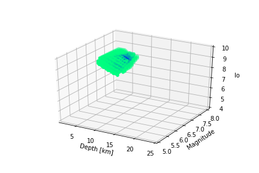</a>
</div></blockquote>
<div class="toctree-wrapper compound">
</div>
</section>
</section>
</section>
</section>
<section id="indices-and-tables">
<h1>Indices and tables<a class="headerlink" href="#indices-and-tables" title="Permalink to this headline">¶</a></h1>
<ul class="simple">
<li><p><a class="reference internal" href="genindex.html"><span class="std std-ref">Index</span></a></p></li>
<li><p><a class="reference internal" href="py-modindex.html"><span class="std std-ref">Module Index</span></a></p></li>
<li><p><a class="reference internal" href="search.html"><span class="std std-ref">Search Page</span></a></p></li>
</ul>
</section>


          </div>
          
        </div>
      </div>
      <div class="sphinxsidebar" role="navigation" aria-label="main navigation">
        <div class="sphinxsidebarwrapper">
<h1 class="logo"><a href="index.html">QUake-MD Interface User Manual</a></h1>


<h3>Navigation</h3>
<p class="caption" role="heading"><span class="caption-text">Contents:</span></p>
<ul class="current">
<li class="toctree-l1"><a class="reference internal" href="installation.html">Installation</a></li>
<li class="toctree-l1"><a class="reference internal" href="installation.html#indices-and-tables">Indices and tables</a></li>
<li class="toctree-l1 current"><a class="current reference internal" href="#">QUake-MD Interface’s documentation</a><ul>
<li class="toctree-l2"><a class="reference internal" href="#launch-quake-md-interface">Launch QUake-MD Interface</a></li>
<li class="toctree-l2"><a class="reference internal" href="#data-visualization">Data Visualization</a><ul>
<li class="toctree-l3"><a class="reference internal" href="#input-data-format">Input data format</a></li>
<li class="toctree-l3"><a class="reference internal" href="#using-data-visualization-interface">Using Data Visualization interface</a></li>
</ul>
</li>
<li class="toctree-l2"><a class="reference internal" href="#quake-md-interface">QUake-MD interface</a><ul>
<li class="toctree-l3"><a class="reference internal" href="#id1">Input data format</a></li>
<li class="toctree-l3"><a class="reference internal" href="#using-quake-md-interface">Using QUake-MD interface</a></li>
<li class="toctree-l3"><a class="reference internal" href="#output-files-description">Output files description</a></li>
</ul>
</li>
</ul>
</li>
<li class="toctree-l1"><a class="reference internal" href="#indices-and-tables">Indices and tables</a></li>
</ul>

<div class="relations">
<h3>Related Topics</h3>
<ul>
  <li><a href="index.html">Documentation overview</a><ul>
      <li>Previous: <a href="installation.html" title="previous chapter">Installation</a></li>
  </ul></li>
</ul>
</div>
<div id="searchbox" style="display: none" role="search">
  <h3 id="searchlabel">Quick search</h3>
    <div class="searchformwrapper">
    <form class="search" action="search.html" method="get">
      <input type="text" name="q" aria-labelledby="searchlabel" autocomplete="off" autocorrect="off" autocapitalize="off" spellcheck="false"/>
      <input type="submit" value="Go" />
    </form>
    </div>
</div>
<script>$('#searchbox').show(0);</script>


        </div>
      </div>
      <div class="clearer"></div>
    </div>
    <div class="footer">
      &copy;2023, Ludmila Provost.
      
      |
      Powered by <a href="http://sphinx-doc.org/">Sphinx 4.4.0</a>
      &amp; <a href="https://github.com/bitprophet/alabaster">Alabaster 0.7.12</a>
      
      |
      <a href="_sources/launch.rst.txt"
          rel="nofollow">Page source</a>
    </div>

    

    
  </body>
</html>